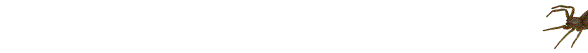

IgG-subclasses
issued by Sanquin, Netherlands
PLA, SRA, Logit
Arduino projects
Spiders from Europe & Australia, calibration programs, word clocks |
This site contains over 4000 pictures of European and Australian spiders and information about them. The spiders are identified from the pictures to avoid killing the spider. Therefore there may be errors in the determination. |
|  |
Other interesting's Electronics in
combination with Arduino's and Raspberry Pi's is the new hobby for many
people. |
| To play with | To listen to | To mail me: Click | |
|
|
|
This page was revised by Ed Nieuwenhuys: Feb 2023
Copyright 1996-2023